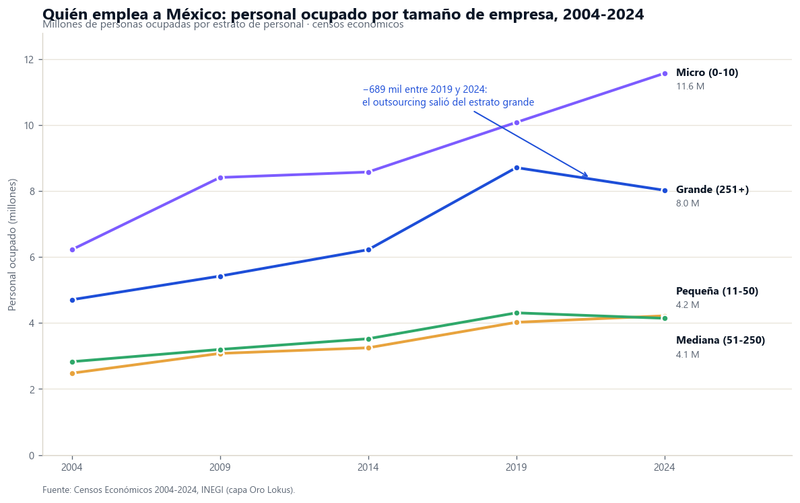
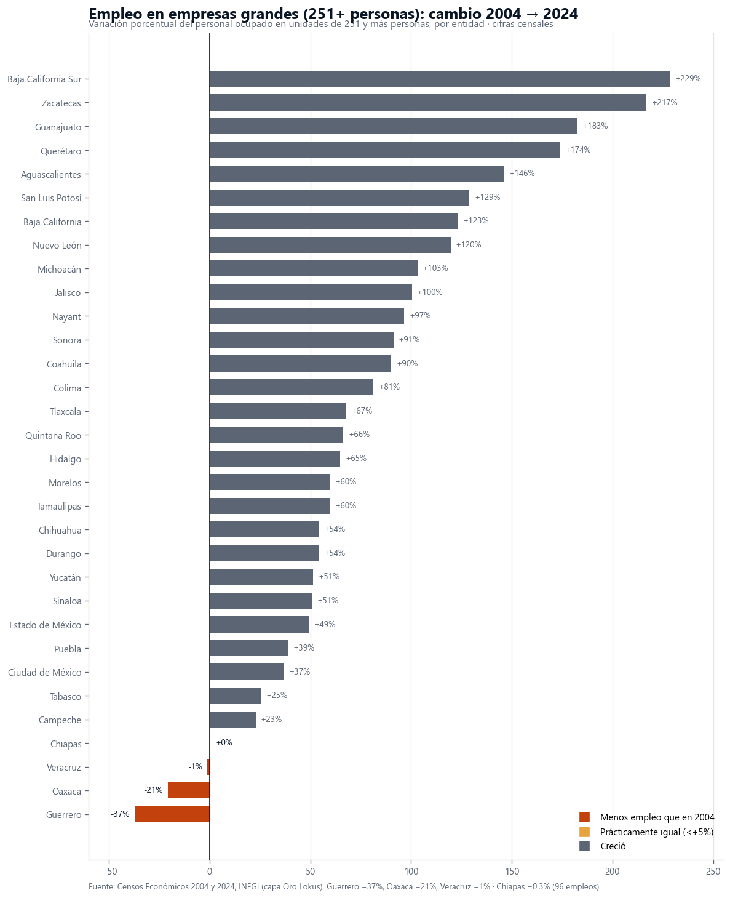

La pregunta con la que arrancó este análisis fue abierta: ¿quién emplea realmente a México — las microempresas o las grandes — y cómo cambió ese reparto en veinte años de censos económicos? Para responderla tomamos el universo completo de unidades económicas del país, clasificado por tamaño en los cinco censos de 2004 a 2024, sin preseleccionar territorios ni sectores. Del ordenamiento emergieron dos historias que nadie contrató juntas: una reforma laboral que redibujó el censo, y una retirada territorial de veinte años que dejó al sur casi sin empresa grande.
La pirámide: 0.18% de las empresas, 54% del valor
El Censo Económico 2024 registra 5,468,180 unidades económicas. De ellas, 5,214,497 —el 95.4%— son microempresas de 0 a 10 personas, que emplean a 11.6 millones de personas: el 41.4% de todo el personal ocupado. En el otro extremo hay 9,747 unidades de 251 y más personas: el 0.18% del total. Esas 9,747 unidades concentran el 28.7% del empleo y generan 54.3% del valor agregado censal bruto del país — más que los 5.46 millones de negocios restantes juntos.
La brecha no es solo de escala sino de productividad y salario: una persona ocupada en una unidad grande genera $1,059,713 pesos de valor agregado al año contra $216,391 en una micro (4.9 veces), y la remuneración media anual por persona remunerada va de $90,771 en la micro a $239,837 en la grande. Además, de los 6.55 millones de personas que trabajan sin remuneración en México, el 96.5% está en microempresas. Dónde se ubica cada estrato no es un dato empresarial: define la base del empleo formal, del salario y de la recaudación de cada territorio.
Fuente: Censo Económico 2024, INEGI. Cifras monetarias nominales del año censal.
El quiebre 2019-2024: un millón y medio de empleos cambió de patrón

Entre los censos 2019 y 2024 pasó algo que no había pasado en la serie: el empleo de las empresas grandes cayó — de 8,714,648 a 8,026,068 personas (−688,580) — mientras la micro sumaba casi 1.5 millones. La lectura fácil sería "las grandes se achicaron". Es falsa, y el detalle sectorial lo demuestra: toda la caída cabe en un solo sector, los servicios de apoyo a los negocios (SCIAN 56), donde operaban las grandes empresas de suministro de personal. Ese sector pasó de 1,742,208 a 358,285 empleos en unidades grandes: −1.38 millones, tras la reforma de 2021 que prohibió la subcontratación de personal.
Esto importa para cualquier equipo de planeación que compare series de empleo: un comparativo 2019 vs 2024 del empleo por tamaño de empresa —o del sector servicios— que no controle por la reforma de subcontratación está midiendo un artefacto legal, no una tendencia económica.
El mapa de veinte años: el sur se quedó sin empresa grande

La serie larga —2004 a 2024, donde la reforma pesa menos porque el punto de partida es anterior al auge del outsourcing— revela la historia territorial. A nivel nacional el empleo en empresas grandes creció 71%. Pero al ordenar las 32 entidades, tres tienen hoy menos que hace veinte años: Guerrero (−37.3%), Oaxaca (−20.7%) y Veracruz (−1.2%). Y Chiapas quedó en cero: pasó de 31,651 a 31,747 personas — 96 empleos en dos décadas.
sumó Chiapas en empresas de 251+ personas entre 2004 y 2024. En el mismo periodo, Guanajuato sumó 279,911 (+183%) y Nuevo León 447,521 (+120%).
| Entidad | Empleo en grandes 2004 | Empleo en grandes 2024 | Cambio | % del empleo estatal en micro (2024) |
|---|---|---|---|---|
| Guerrero | 30,201 | 18,924 | −37.3% | 73.1% |
| Oaxaca | 30,538 | 24,218 | −20.7% | 76.3% |
| Veracruz | 139,410 | 137,708 | −1.2% | 57.4% |
| Chiapas | 31,651 | 31,747 | +0.3% | 68.7% |
| Guanajuato | 153,365 | 433,276 | +182.5% | 40.2% |
| Querétaro | 86,243 | 236,285 | +174.0% | 31.3% |
| Aguascalientes | 59,749 | 147,055 | +146.1% | 35.9% |
| Nuevo León | 374,163 | 821,684 | +119.6% | 21.7% |
Personal ocupado en unidades de 251+ personas, 2004 y 2024. Fuente: Censos Económicos, INEGI. Nacional: +70.5%.
El espejo de esa ausencia es la estructura del empleo que queda: en Oaxaca el 76.3% del personal ocupado trabaja en unidades de 0 a 10 personas; en Guerrero, 73.1%; en Chiapas, 68.7%. En Nuevo León, 21.7%. No es que el sur tenga "otra vocación": es que su empleo depende de las unidades que menos pagan ($90,771 anuales por persona remunerada en la micro nacional), menos producen y más trabajo no remunerado concentran. La geografía de la empresa grande es también, censo tras censo, la geografía del salario.
Implicaciones para la gestión pública
1. La atracción de inversión de escala es política salarial
La diferencia entre una economía estatal con 40% del empleo en grandes y una con 5% no es cosmética: es una diferencia de 2.6 veces en remuneración media y de 4.9 veces en valor generado por persona. Un plan estatal de desarrollo del sur que no tenga una estrategia explícita —suelo industrial, energía, conectividad, formación técnica— para atraer y retener unidades de escala está aceptando, de facto, que su población trabaje en el estrato de menor salario.
2. Veinte años de programas no han movido la aguja en el sur
Los datos abarcan cinco censos y cuatro administraciones federales completas, con todos sus programas de desarrollo regional. El resultado neto en Chiapas es +96 empleos de empresa grande. La rendición de cuentas del desarrollo regional debería medirse contra este tipo de indicador estructural —dónde se instala y crece el empleo de escala— y no solo contra el gasto ejercido o el empleo total.
3. Cuidar la base que ya se tiene
Veracruz ilustra el riesgo de la erosión lenta: sin colapso visible, su empleo en grandes lleva veinte años estancado en torno a 138 mil mientras el nacional crecía 71%. Para una tesorería estatal, el estrato grande es desproporcionadamente importante: concentra la nómina formal —base del impuesto sobre nómina y de la seguridad social— y el valor agregado. Monitorear su evolución por censo debería ser rutina de las secretarías de desarrollo económico.
4. Leer el censo con la reforma en mente
Cualquier diagnóstico municipal o estatal que compare empleo por sector o por tamaño entre 2019 y 2024 debe señalar el efecto de la reforma de subcontratación: los servicios de apoyo a los negocios (SCIAN 56) perdieron 1.38 millones de empleos en unidades grandes que reaparecieron como nómina directa en otros sectores. Ignorarlo produce diagnósticos falsos de "colapso de servicios" o "auge manufacturero" donde solo hubo reclasificación.
Este hallazgo complementa lo que hemos documentado antes: el mapa real del nearshoring mostró que la manufactura crece en el corredor Monterrey–Bajío–Edomex, y el mapa de la informalidad mostró que Oaxaca, Guerrero y Chiapas encabezan el empleo sin seguridad social. Esta radiografía por tamaño de empresa es la tercera cara del mismo prisma: donde no hay empresa grande, hay micro, informalidad y salario bajo. El diagnóstico de un plan municipal o estatal de desarrollo serio empieza por reconocer en cuál de esos Méxicos está parado.
Conclusión
México es, en número de empresas, un país de microempresas; en valor, un país de 9,747 gigantes. Entre 2004 y 2024 esa pirámide se movió dos veces: una por ley —la reforma de subcontratación vació el estrato grande de 1.38 millones de empleos de outsourcing y los devolvió a la nómina directa— y otra por geografía, más lenta y más grave: la empresa grande se multiplicó en el Bajío y el norte y se retiró del sur. Guerrero, Oaxaca y Veracruz tienen hoy menos empleo de escala que hace veinte años; Chiapas, el mismo. Ningún programa social compensa estructuralmente esa ausencia, porque el estrato que falta es precisamente el que paga 2.6 veces más. La primera tarea de la política de desarrollo del sur no es repartir mejor lo que hay: es explicar —y revertir— por qué la empresa grande no llega.
¿Cómo es la estructura empresarial de tu territorio?
En la plataforma de GDI puedes consultar el empleo, las unidades económicas y su evolución censal —junto con finanzas públicas, población y pobreza— de cualquier estado o municipio de México, y construir el diagnóstico económico de tu plan de desarrollo en minutos.
Explorar mi territorioPreguntas frecuentes
¿Qué estados tienen menos empleo en empresas grandes que hace 20 años?
Guerrero pasó de 30,201 a 18,924 personas ocupadas en unidades de 251+ (−37%), Oaxaca de 30,538 a 24,218 (−21%) y Veracruz de 139,410 a 137,708 (−1.2%) entre los censos 2004 y 2024. Chiapas quedó prácticamente igual: +96 empleos en dos décadas.
¿Por qué cayó el empleo de las empresas grandes entre 2019 y 2024?
Por la reforma de 2021 que prohibió la subcontratación de personal: los servicios de apoyo a los negocios (SCIAN 56) pasaron de 1.74 millones a 358 mil empleos en unidades grandes. Excluyendo ese sector, las grandes ganaron 695 mil empleos (+10%).
¿Qué proporción del valor agregado generan las empresas grandes?
Las 9,747 unidades de 251+ personas —0.18% del total— generaron 54.3% del valor agregado censal bruto en 2024: más que los 5.46 millones de negocios restantes juntos.
¿Cuánto paga una empresa grande frente a una micro?
$239,837 pesos anuales por persona remunerada contra $90,771 en la micro: 2.6 veces más (Censo Económico 2024, cifras nominales).
Datos técnicos
Fuente principal: INEGI, Censos Económicos 2004, 2009, 2014, 2019 y 2024, tabulados por estrato de personal ocupado (0-10, 11-50, 51-250, 251 y más personas), consultados en la capa de datos validada de Lokus. Universo completo: nacional y las 32 entidades federativas, todos los estratos. Cada censo reporta la actividad del año previo; todas las cifras monetarias son nominales (pesos corrientes de cada año censal), por lo que los comparativos monetarios entre censos reflejan también inflación. Los comparativos de empleo y unidades no tienen ese sesgo.
Definiciones: remuneración media = remuneraciones totales ÷ personal remunerado (excluye a propietarios, familiares y otro personal no remunerado); productividad laboral = valor agregado censal bruto ÷ personal ocupado total. El personal ocupado incluye al personal suministrado por otra razón social, lo que permite observar el efecto de la reforma de subcontratación de 2021 en el censo 2024.
Detalle sectorial: tabulados censales por sector SCIAN × estrato (nacional). SCIAN 56: Servicios de apoyo a los negocios y manejo de residuos, y servicios de remediación — incluye las unidades de suministro de personal. SCIAN 31-33: Industrias manufactureras.
Nota metodológica: el análisis partió de una pregunta abierta y del universo completo ordenado por la métrica; los grupos territoriales emergen de los datos, no de una clasificación previa. Los censos económicos no cubren actividad agropecuaria (salvo pesca y acuicultura) ni informalidad ambulante sin establecimiento.
Análisis: GDI — Gobierno Digital e Innovación · Fecha de análisis: 15 de agosto de 2026 · gobiernodigitaleinnovacion.com